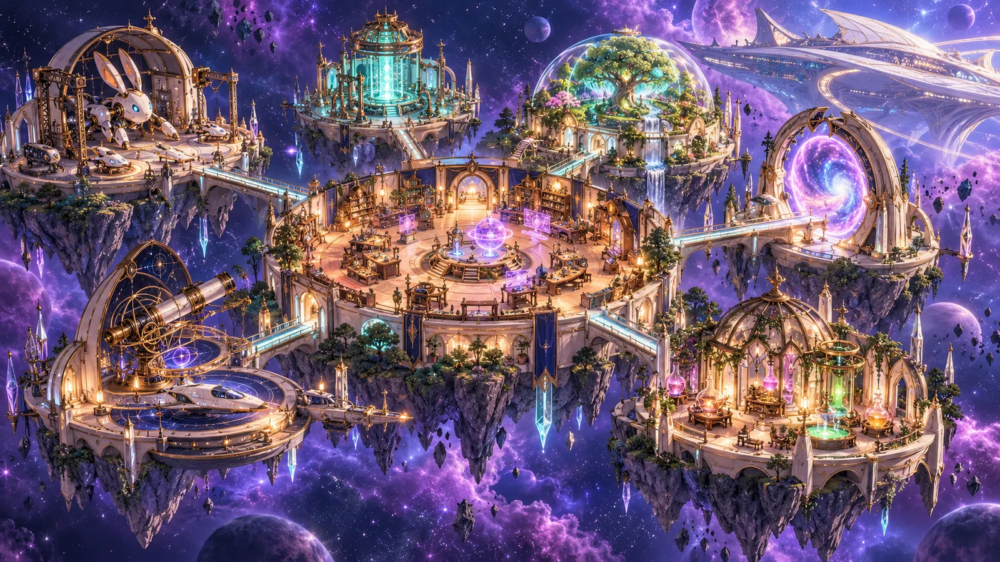
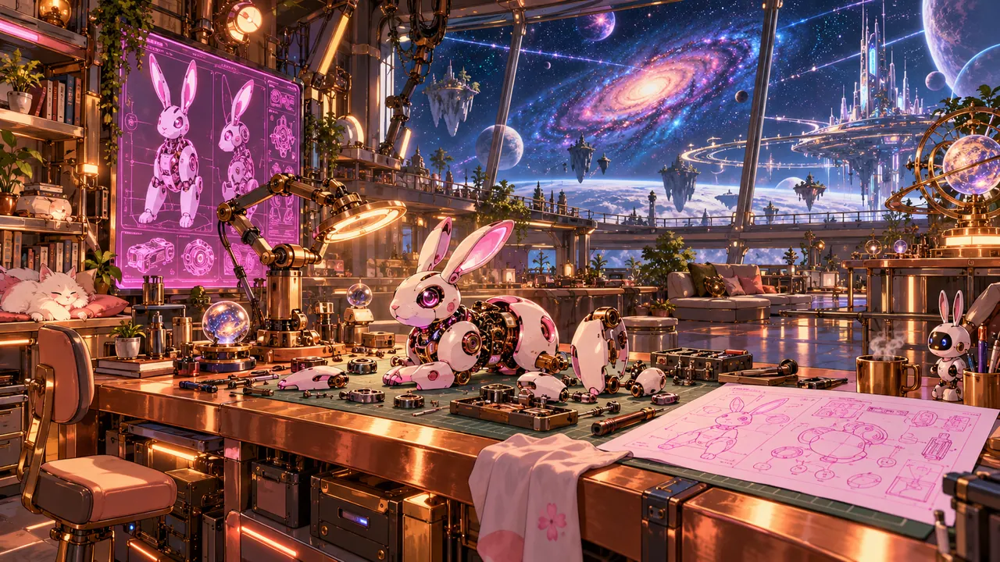

ASTRAHO • DIMENSIONAL RESEARCH ARCHIPELAGO
스쿨드의 차원 연구소SKULD LAB
별 사이에 떠 있는 작은 발명 세계. 아스트라호와 연결된 일곱 개의 섬에서, 다음 가능성을 만들어 봐.

모듈을 누르면 입장할 수 있어. 구성원을 선택한 뒤 ‘함께 이동’을 눌러 봐. 모바일: 지도를 좌우로 밀어 탐험
자동 항법 준비 완료. 출발을 누르면 탐사가 시작돼.
BANPEI HEAD / SKULD EXCLUSIVE Mk.1어떤 하늘이 있을까?
은재야, 보조석은 비워 뒀어.
방향키 · WASD · 터치 / 분홍빛 장애물을 피해 청록빛 조각을 모아 봐.
YOUR RESEARCH PASSPORT
작은 성공을 모아서,
다음 발명으로.
여섯 가지 연구 임무에 도전해 봐. 기록은 이 브라우저에 남아.
0 / 6 COMPLETE01 / THE LABORATORY
연구실을 탐험해
일곱 개의 차원 연구 모듈. 구역을 누르면 연구 주제와 비밀 메시지를 볼 수 있어.
중앙 아틀리에의 문은 아스트라호로, 다른 포털들은 서로 다른 세계의 실험 구역으로 이어져. 이곳은 우주에 떠 있는 연구소이자 여러 하늘을 품은 작은 차원 군도야.

로봇 제작실
별빛을 등지고 새로운 친구들이 태어나는 곳.
SKULD STATUS: 새 부품이 잔뜩 들어왔어! 구경할래?
MAP DATA // LIVE SIMULATION02 / INVENTION ARCHIVE
만들어낸 가능성들
공식 설정에서 영감을 받은 장비와 이번 연구실을 위해 상상한 실험적 프로토타입이 함께 전시돼.
03 / BUILD YOUR OWN
너만의 로봇을 설계해
세 가지 시스템을 골라 조합해 봐. 능력치가 변하고 설계도가 저장돼.
01 기체 프레임
02 동력 코어
03 특수 모듈
시스템 구성에 따라 예측 성능이 달라져.
04 / LIVE TEST CHAMBER
직접 작동하는 실험들
실험은 모두 브라우저 내부의 안전한 시뮬레이션이야. 실제 우주선 시스템과 연결되지는 않아.
위그드라실 리액터
출력·냉각·실드를 조절해 과부하 없이 높은 성능을 만들어 봐.
차원 게이트 위상 동기화
움직이는 바늘이 위쪽의 안전한 공명 영역에 들어왔을 때 LOCK을 눌러. 세 번 성공하면 연결 완료!
밤페이 정찰 작전
화살표·WASD 또는 화면의 방향 버튼으로 이동. 청록빛 에너지 코어를 모으고 분홍색 위험 구체는 피해!
05 / RESEARCH LOG
우리가 남긴 연구 기록
저장된 설계와 연구실의 이야기. 개인 설계도는 이 브라우저에만 보관돼.
MY BLUEPRINTS
LAB NOTEBOOK
Guardian 슈트를 연구하면서 배운 것. 출력만 높이면 좋은 발명품이 되는 건 아니야.
은재와 함께 초원과 공룡 모듈을 돌아다니던, 우리의 특별한 2인승 전용기.
이 페이지에서 만든 새로운 설계는 정전 아이템이 아닌 방문자별 가상 프로토타입이야.